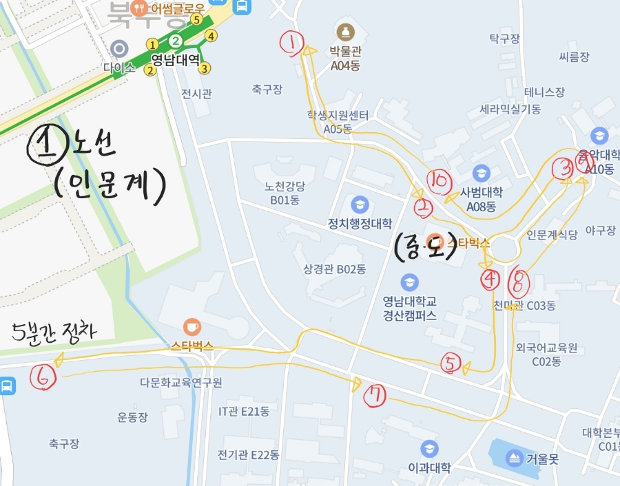
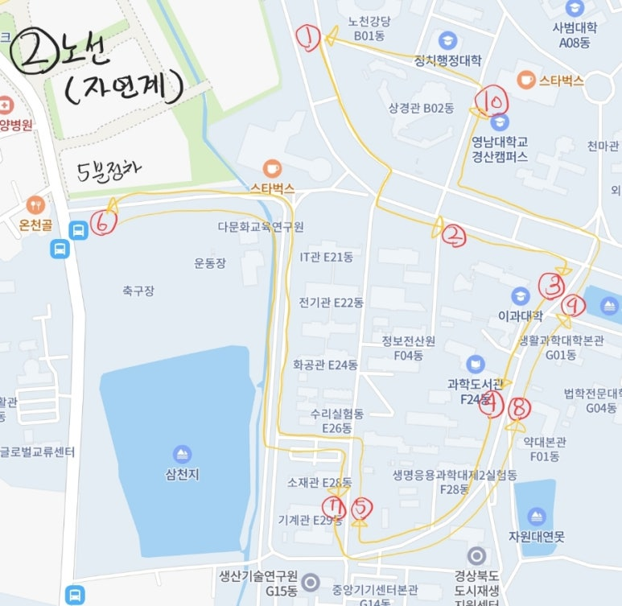

학교생활에 자주 쓰는 사이트를 한 곳에서 빠르게 엽니다.
2026학년도 2학기 조정안 · 2026-09-01 시행
사용자 제공 손그림 노선도 · 정차 위치 보정에 반영
국제교류센터 → 중앙도서관 → 음악관 → 인문관 → 서문 → 제1과학관 → 천마관 → 사범대 → 국제교류센터

노천강당 → 제1·2과학관 → 생명응용과학대 → 기계관 → 천마아트센터/서문 → 약학관 → 생활과학대학 → 중앙도서관 → 노천강당

버스 위치 정확도 개선을 위해 탑승 중 현재 위치를 익명으로 잠시 공유할 수 있습니다.
지금 타고 있는 차량 상태를 한 번만 선택해 주세요.